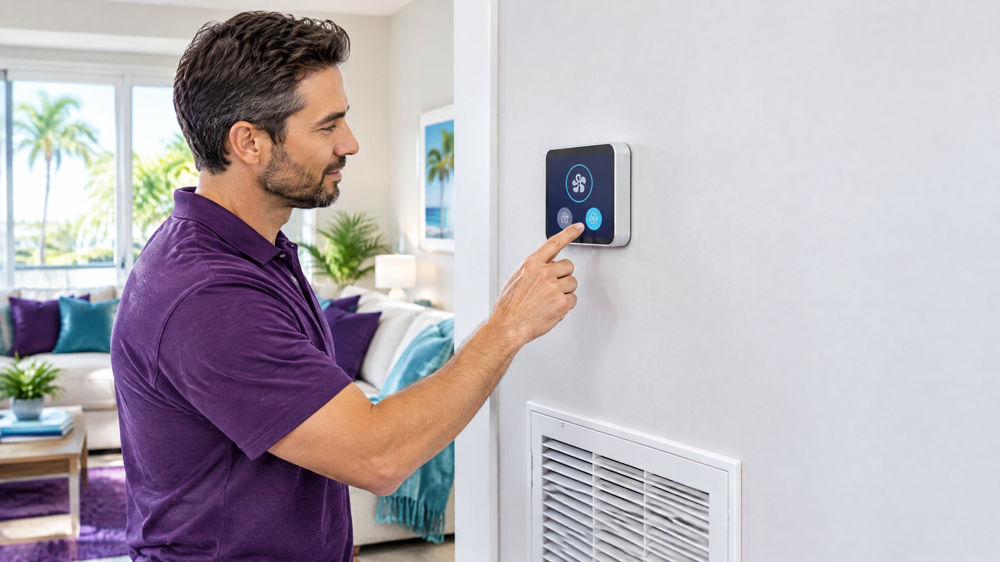
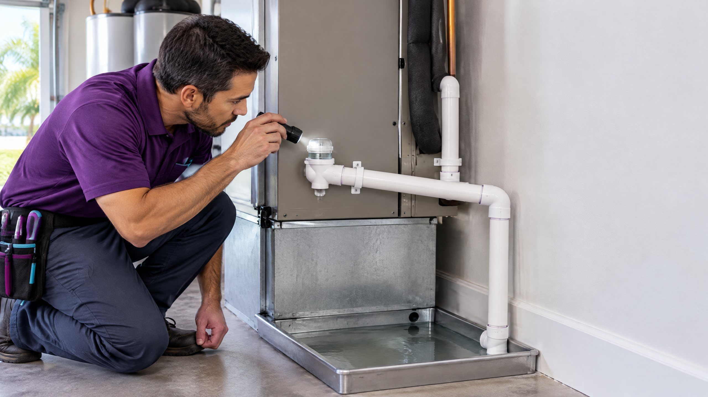

Should My AC Fan Be Set to Auto or On in Tampa?
Compare Auto, On, and Circulate for Tampa humidity, airflow, energy use, and signs that the blower or controls need diagnosis.
Read the answer →Focused answers for AC repair symptoms, equipment questions, humidity, maintenance, and home comfort across Tampa and North Tampa.

New weekday posts answer one homeowner question at a time. For deeper buying and planning resources, visit the Learning Center.

Compare Auto, On, and Circulate for Tampa humidity, airflow, energy use, and signs that the blower or controls need diagnosis.
Read the answer →
Learn why a condensate line may block repeatedly, which warning signs matter, and when the pan, trap, pump, or drainage path needs inspection.
Read the answer →Understand short cycling, the checks a homeowner can make, common airflow and control causes, and when the pattern needs system measurements.
Read the answer →Separate simple thermostat, filter, vent, and outdoor-unit checks from airflow, refrigerant, electrical, and mechanical problems that need measurements.
Read the answer →
Review warning signs that may justify a repair visit or a broader replacement conversation.
Read the article →
Understand how runtime, airflow, drainage, ducts, and equipment sizing can affect indoor moisture.
Read the article →
Use a season-by-season checklist to reduce preventable cooling problems during Tampa’s long cooling season.
Read the article →
Prioritize thermostat settings, filters, ducts, maintenance, and equipment decisions that influence cooling energy use.
Read the article →The Learning Center covers larger decisions such as replacement cost, Manual J sizing, permits, Heat Pump comparisons, and quote evaluation. Weekday blog posts answer narrower questions and link into those evergreen guides.
Talk with a local North Tampa team that will inspect the system, explain the findings, and outline the available repair options.